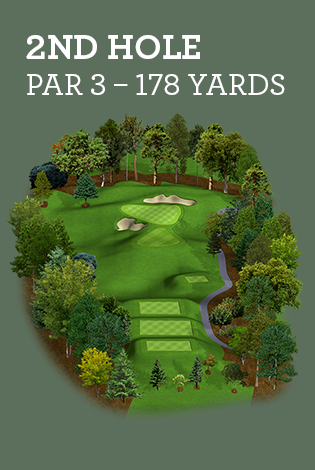
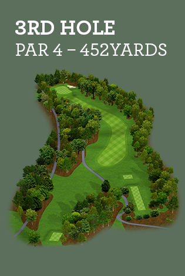
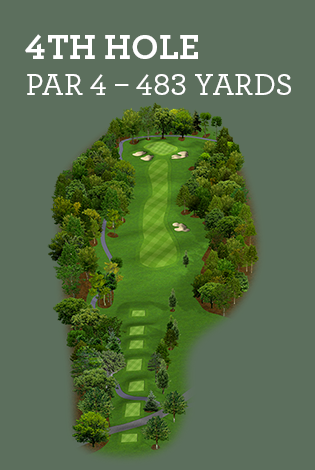
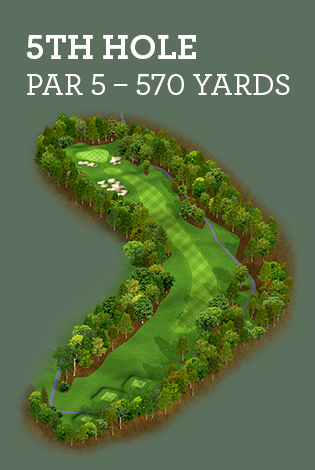
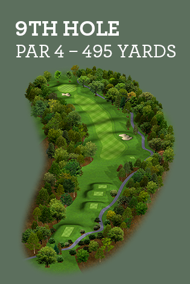
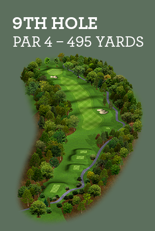

READY. SET. SWING.
ARE YOU READY TO EXPERIENCE ONE OF THE FINEST SPORT VENUES IN THE SOUTHEAST?
Quail Hollow Club is one of the finest championship golf courses in the country. The course at Quail Hollow blends the imagination and craftsmanship of golf greats like George Cobb, Arnold Palmer, and Tom Fazio with a majestic landscape to create a golf experience that is as challenging as it is beautiful.
GET SET FOR GREAT PLAY.
The Wells Fargo Championship traditionally draws a field of some of the most dynamic names in professional golf so you will be teamed with golfers who epitomize the best of the sport.
Quick Reminders
Check-in will be on the lower level of The Ballantyne Hotel & Lodge before the Draft Party reception. If you are unable to attend the Draft Party, you may register Monday May 11th in the Quail Grill at Quail Hollow Club.
Your Monday Pro-Am credential will be issued to you at the Draft Party Registration. Please wear your credential at all times while on tournament grounds. The credential will be valid for tournament entry the entire week and provide you access to the Clubhouse and Quail Hollow Club grounds.
The play format will be One Best Ball Net and Par is Your Partner will be enforced. If you can no longer make a net par on your ball, you must pick up and proceed with your team as they finish the hole. Golf carts will not be used.
Insta-Plak will be taking team photos on Pro-Am day and will distribute them on the 9 green and the 18 green at the conclusion of your round.
If you have any questions, please contact Gwen Crow at 704-554-8029 or email her at gwen@wellsfargochampionship.com.
HERE IS WHERE YOUR SWING AND SKILL WILL BE PUT TO THE TEST
Preview the Quail Hollow course and prepare yourself for what will be an unforgettable day on the links.
   
 

Duis rhoncus tristique sapien, id iaculis massa vestibulum eu. Sed blandit tortor non interdum rutrum. Sed accumsan, felis eget varius egestas, sem neque hendrerit arcu, vitae fringilla lorem augue ut dui. Integer ut ullamcorper leo. Aliquam odio metus, pharetra eget nisl eget, porta fringilla nisi. Quisque tincidunt ex ex, vel sodales massa egestas vel. Suspendisse facilisis arcu eu fermentum auctor. Fusce finibus maximus leo in ultricies.